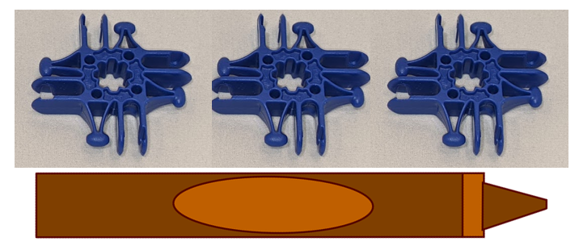
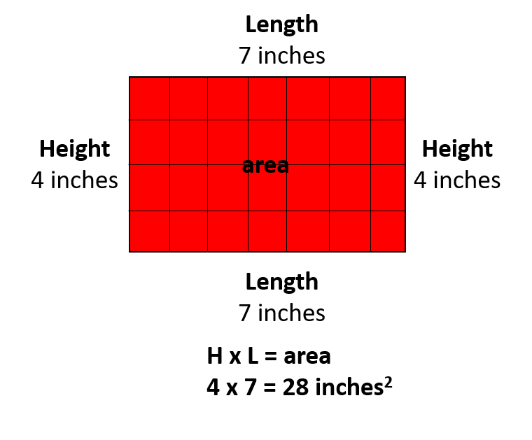
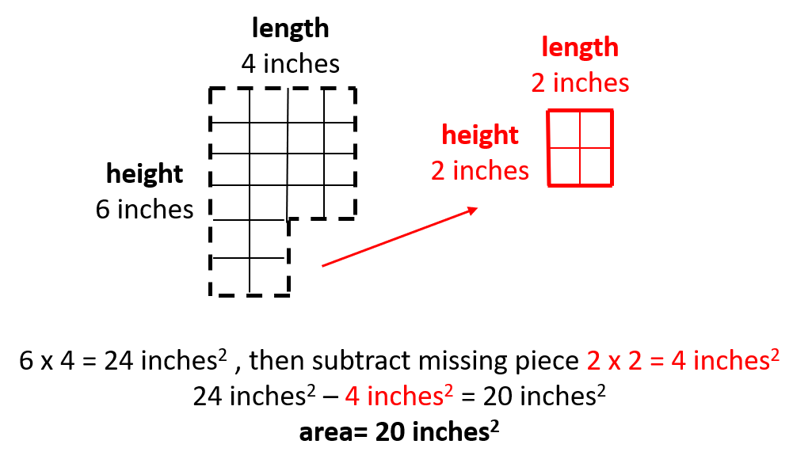
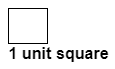
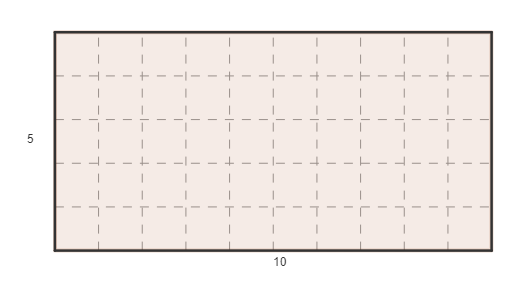
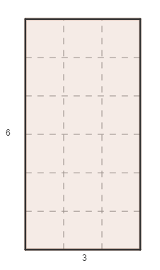
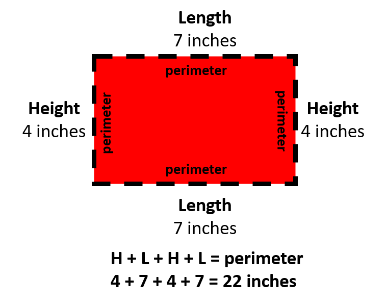
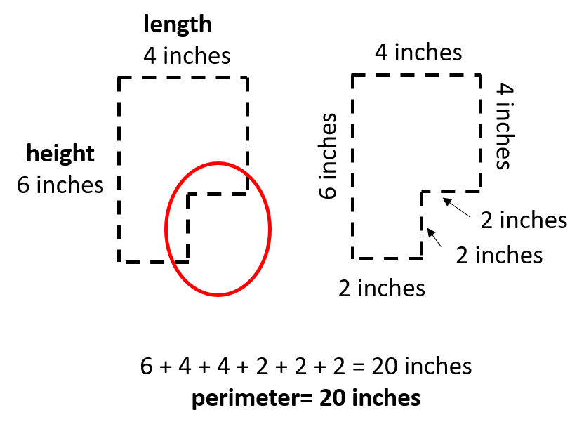
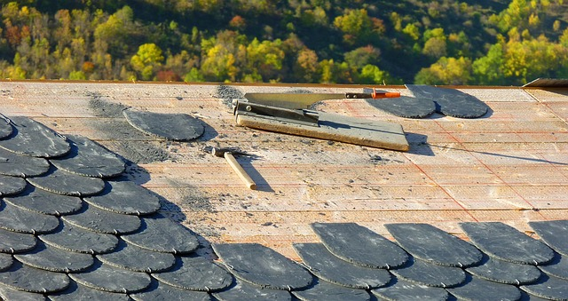

What You Should Know - Lux Blox: Build and Measure 3D Shapes
 Important Vocabulary
Important Vocabulary
- Two-dimensional (2D) Shape - a flat, closed shape
- Three-dimensional (3D) Shape - a closed shape with length, width, and height
- Area - the surface of a polygon
- Unit Square - a square whose side is one unit long
- Height - how tall a shape is
- Length - how long a shape is
- Polygon - a closed 2D shape with straight sides
- Width - how fat or wide a shape is
2D and 3D Shapes
Select each tab to learn more.
Non-Standard Measurement
The term non-standard measurement is used when discussing measuring that uses non-standard measures. Standard measures would include inches, yards, miles, etc. You would use a ruler or other tool for these measurements.
Non-standard measurements can use any object to measure with. You can use cubes, counting bears, paper clips, etc. Take a look at the pieces in the Lux Blox kit. You can use these for measuring.
If you want the length of a crayon, you can measure it with Lux Blox pieces. This would be a non-standard measurement. We can say the crayon is 3 Lux Blox pieces long.

Area of a Shape
Area is the inside or surface of a 2D shape. When you measure the area of a polygon or 2D shape, you have to calculate the space inside the shape. One way to determine the area of a 2D shape is to use unit squares. A unit square is simply a square that is one unit long.



If we are trying to find the area of a 2D shape, we can count the number of unit squares in the shape. This will tell us the surface area. Take a look at the rectangle. The rectangle is made up of many smaller squares. These cubes are unit squares.

To figure out the area of the rectangle, we will count the number of squares inside of it.
There are 10 squares in each horizontal row. This is the length of the rectangle.
There are 5 squares in each column. This is the height of the rectangle.
If you count all of the unit squares you will get 50 squares. This means the area of the rectangle is 50 unit squares. When you are writing the area of a shape you say the unit is squared. The area of the rectangle is 50 units².
Find the area of this rectangle:

The rectangle has a height of 6 squares. The length of the rectangle is 3 squares. If you count the squares you will have 18 unit squares.
You can also use repeated addition to find the area. If you add 6, 3 times you will also get 18. For example: 6 + 6+ 6 = 18. The area of this rectangle is 18 units².
Why Are Perimeter and Area Important?
Perimeter and area are two common measurements that professionals use every day. In construction, perimeter and area affect how much material such as shingles, drywall, carpet and even nails are needed, and these calculations are important to help professionals calculate the cost of a job. Farmers use perimeter and area to determine how to fence grazing yards or to help them figure out how many seeds to plant. Engineers use perimeter and area to design cars and airplanes and to help determine the strength and pressure of different materials.



Career Connection and Real-World Application
Area in Careers
The ability to determine the area of an object or space is a valuable tool. Carpenters, engineers, architects are required to find the area of different spaces and materials everyday. Carpenters may use this math to figure out how much carpet is needed in a room. An architect needs to use area when designing the size of the rooms in a house. An engineer may use area to figure out how much room they have to build a machine.